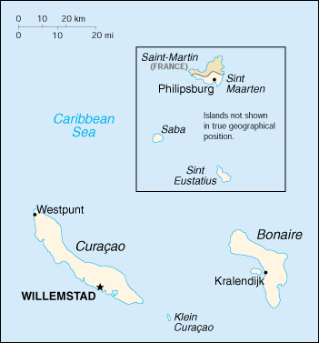

(part of the Kingdom of the Netherlands)
|
Netherlands Antilles (part of the Kingdom of the Netherlands) |
|
| Introduction Geography People Government Economy Communications Transportation Military Transnational Issues | ||
|  | ||
| Netherlands Antilles | Introduction | Top of Page |
| Background: | Once the center of the Caribbean slave trade, the island of Curacao was hard hit by the abolition of slavery in 1863. Its prosperity (and that of neighboring Aruba) was restored in the early 20th century with the construction of oil refineries to service the newly discovered Venezuelan oil fields. The island of Sint Maarten is shared with France; its northern portion is named Saint Martin and is part of Guadeloupe. |
| Netherlands Antilles | Geography | Top of Page |
| Location: | Caribbean, two island groups in the Caribbean Sea - one includes Curacao and Bonaire north of Venezuela; the other is east of the Virgin Islands |
| Geographic coordinates: | 12 15 N, 68 45 W |
| Map references: | Central America and the Caribbean |
| Area: |
total:
960 sq km
land: 960 sq km water: 0 sq km note: includes Bonaire, Curacao, Saba, Sint Eustatius, and Sint Maarten (Dutch part of the island of Saint Martin) |
| Area - comparative: | more than five times the size of Washington, DC |
| Land boundaries: |
total:
10.2 km
border countries: Guadeloupe (Saint Martin) 10.2 km |
| Coastline: | 364 km |
| Maritime claims: |
exclusive fishing zone:
12 NM
territorial sea: 12 NM |
| Climate: | tropical; ameliorated by northeast trade winds |
| Terrain: | generally hilly, volcanic interiors |
| Elevation extremes: |
lowest point:
Caribbean Sea 0 m
highest point: Mount Scenery 862 m |
| Natural resources: | phosphates (Curacao only), salt (Bonaire only) |
| Land use: |
arable land:
10%
permanent crops: 0% permanent pastures: 0% forests and woodland: 0% other: 90% (1993 est.) |
| Irrigated land: | NA sq km |
| Natural hazards: | Curacao and Bonaire are south of Caribbean hurricane belt and are rarely threatened; Sint Maarten, Saba, and Sint Eustatius are subject to hurricanes from July to October |
| Environment - current issues: | NA |
| Netherlands Antilles | People | Top of Page |
| Population: | 212,226 (July 2001 est.) |
| Age structure: |
0-14 years:
25.21% (male 27,332; female 26,169)
15-64 years: 66.99% (male 67,562; female 74,599) 65 years and over: 7.8% (male 6,874; female 9,690) (2001 est.) |
| Population growth rate: | 0.97% (2001 est.) |
| Birth rate: | 16.55 births/1,000 population (2001 est.) |
| Death rate: | 6.41 deaths/1,000 population (2001 est.) |
| Net migration rate: | -0.42 migrant(s)/1,000 population (2001 est.) |
| Sex ratio: |
at birth:
1.05 male(s)/female
under 15 years: 1.04 male(s)/female 15-64 years: 0.91 male(s)/female 65 years and over: 0.71 male(s)/female total population: 0.92 male(s)/female (2001 est.) |
| Infant mortality rate: | 11.4 deaths/1,000 live births (2001 est.) |
| Life expectancy at birth: |
total population:
74.94 years
male: 72.76 years female: 77.22 years (2001 est.) |
| Total fertility rate: | 2.07 children born/woman (2001 est.) |
| HIV/AIDS - adult prevalence rate: | NA% |
| HIV/AIDS - people living with HIV/AIDS: | NA |
| HIV/AIDS - deaths: | NA |
| Nationality: |
noun:
Dutch Antillean(s)
adjective: Dutch Antillean |
| Ethnic groups: | mixed black 85%, Carib Amerindian, white, East Asian |
| Religions: | Roman Catholic, Protestant, Jewish, Seventh-Day Adventist |
| Languages: | Dutch (official), Papiamento (a Spanish-Portuguese-Dutch-English dialect) predominates, English widely spoken, Spanish |
| Literacy: |
definition:
age 15 and over can read and write
total population: 98% male: 98% female: 99% (1981 est.) |
| Netherlands Antilles | Government | Top of Page |
| Country name: |
conventional long form:
none
conventional short form: Netherlands Antilles local long form: none local short form: Nederlandse Antillen former: Curacao and Dependencies |
| Dependency status: | part of the Kingdom of the Netherlands; full autonomy in internal affairs granted in 1954; Dutch Government responsible for defense and foreign affairs |
| Government type: | parliamentary |
| Capital: | Willemstad |
| Administrative divisions: |
none (part of the Kingdom of the Netherlands)
note: each island has its own government |
| Independence: | none (part of the Kingdom of the Netherlands) |
| National holiday: | Queen's Day (Birthday of Queen-Mother JULIANA in 1909 and accession to the throne of her oldest daughter BEATRIX in 1980), 30 April |
| Constitution: | 29 December 1954, Statute of the Realm of the Netherlands, as amended |
| Legal system: | based on Dutch civil law system, with some English common law influence |
| Suffrage: | 18 years of age; universal |
| Executive branch: |
chief of state:
Queen BEATRIX of the Netherlands (since 30 April 1980), represented by Governor General Jaime SALEH (since NA October 1989)
head of government: Prime Minister Miguel POURIER (since 8 November 1999); Deputy Prime Minister Susanne CAMELIA-ROMER (since NA) note: Miguel POURIER assumed prime ministership following the resignation of Susanne CAMELIA-ROMER cabinet: Council of Ministers elected by the Staten elections: the monarch is hereditary; governor general appointed by the monarch for a six-year term; following legislative elections, the leader of the majority party is usually elected prime minister by the Staten; election last held 30 January 1998 (next to be held by NA 2002) note: government coalition - PDB, DP-St. M, FOL, PLKP, PNP |
| Legislative branch: |
unicameral States or Staten (22 seats; members are elected by popular vote to serve four-year terms)
elections: last held 30 January 1998 (next to be held by NA 2002) election results: percent of vote by party - NA%; seats by party - PAR 4, PNP 3, SPA 1, PDB 2, UPB 1, MAN 2, PLKP 3, WIPM 1, SEA 1, DP-St. M 2, FOL 2; no party won enough seats to form a government note: the government of Prime Minister Miguel POURIER is a coalition of several parties; current seats by party - PAR 4, PNP 3, FOL 2, MAN 2, UPB 2, DP-St. M 2, PDB 1, SEA 1, WIPM 1, other 4 |
| Judicial branch: | Joint High Court of Justice (judges appointed by the monarch) |
| Political parties and leaders: |
Antillean Restructuring Party or PAR [Miguel POURIER]; C 93 [Stanley BROWN]; Democratic Party of Bonaire or PDB [Jopi ABRAHAM]; Democratic Party of Curacao or DP [Errol HERNANDEZ]; Democratic Party of Sint Eustatius or DP-St. E [Julian WOODLEY]; Democratic Party of Sint Maarten or DP-St. M [Sarah WESCOTT-WILLIAMS]; Foundation Energetic Management Anti-Narcotics or FAME [Eric LODEWIJKS]; Labor Party People's Crusade or PLKP [Errol COVA]; National People's Party or PNP [Susanne F. C. CAMELIA-ROMER]; New Antilles Movement or MAN [Kenneth GIJSBERTHA]; Patriotic Union of Bonaire or UPB [Ramon BOOI]; Patriotic Movement of Sint Maarten or SPA [Vance JAMES, Jr.]; People's Party or PAPU [Richard Hodi]; Pro Curacao Party or PPK [Winston LOURENS]; Saba Democratic Labor Movement [Steve HASSELL]; Saba Unity Party [Carmen SIMMONDS]; St. Eustatius Alliance or SEA [Kenneth VAN PUTTEN]; Serious Alternative People's Party or Sapp [Julian ROLLOCKS]; Social Action Cause or KAS [Benny DEMEI]; Windward Islands People's Movement or WIPM [Will JOHNSTON]; Workers' Liberation Front or FOL [Anthony GODETT, Rignald LAK, Editha WRIGHT]
note: political parties are indigenous to each island |
| Political pressure groups and leaders: | NA |
| International organization participation: | Caricom (observer), ECLAC (associate), Interpol, IOC, UNESCO (associate), UPU, WCL, WMO, WToO (associate) |
| Diplomatic representation in the US: | none (represented by the Kingdom of the Netherlands) |
| Diplomatic representation from the US: |
chief of mission:
Consul General Barbara J. STEPHENSON
consulate(s) general: J. B. Gorsiraweg #1, Willemstad AN, Curacao mailing address: P. O. Box 158, Willemstad, Curacao telephone: [599] (9) 4613066 FAX: [599] (9) 4616489 |
| Flag description: | white, with a horizontal blue stripe in the center superimposed on a vertical red band, also centered; five white, five-pointed stars are arranged in an oval pattern in the center of the blue band; the five stars represent the five main islands of Bonaire, Curacao, Saba, Sint Eustatius, and Sint Maarten |
| Netherlands Antilles | Economy | Top of Page |
| Economy - overview: | Tourism, petroleum refining, and offshore finance are the mainstays of this small economy, which is closely tied to the outside world. Although GDP has declined slightly in each of the past five years, the islands enjoy a high per capita income and a well-developed infrastructure as compared with other countries in the region. Almost all consumer and capital goods are imported, with Venezuela, the US, and Mexico being the major suppliers. Poor soils and inadequate water supplies hamper the development of agriculture. |
| GDP: | purchasing power parity - $2.4 billion (2000 est.) |
| GDP - real growth rate: | -3.5% (2000 est.) |
| GDP - per capita: | purchasing power parity - $11,400 (2000 est.) |
| GDP - composition by sector: |
agriculture:
1%
industry: 15% services: 84% (1996 est.) |
| Population below poverty line: | NA% |
| Household income or consumption by percentage share: |
lowest 10%:
NA%
highest 10%: NA% |
| Inflation rate (consumer prices): | 6.4% (2000 est.) |
| Labor force: | 89,000 |
| Labor force - by occupation: | agriculture 1%, industry 13%, services 86% (1994 est.) |
| Unemployment rate: | 14.9% (1998 est.) |
| Budget: |
revenues:
$710.8 million
expenditures: $741.6 million, including capital expenditures of $NA (1997 est.) |
| Industries: | tourism (Curacao, Sint Maarten, and Bonaire), petroleum refining (Curacao), petroleum transshipment facilities (Curacao and Bonaire), light manufacturing (Curacao) |
| Industrial production growth rate: | NA% |
| Electricity - production: | 1.11 billion kWh (1999) |
| Electricity - production by source: |
fossil fuel:
100%
hydro: 0% nuclear: 0% other: 0% (1999) |
| Electricity - consumption: | 1.032 billion kWh (1999) |
| Electricity - exports: | 0 kWh (1999) |
| Electricity - imports: | 0 kWh (1999) |
| Agriculture - products: | aloes, sorghum, peanuts, vegetables, tropical fruit |
| Exports: | $276 million (f.o.b., 2000) |
| Exports - commodities: | petroleum products |
| Exports - partners: | US 17.5%, Guatemala 8%, Costa Rica 6.5%, The Bahamas 4.6%, Jamaica 4.1%, Chile 3.4% (1998) |
| Imports: | $1.5 billion (f.o.b., 2000) |
| Imports - commodities: | crude petroleum, food, manufactures |
| Imports - partners: | Venezuela 35.3%, US 21%, Mexico 9.8%, Italy 5.4%, Netherlands 4.8%, Brazil 3.1% (1998) |
| Debt - external: | $1.35 billion (1996) |
| Economic aid - recipient: | IMF provided $61 million in 2000, and the Netherlands continued its support with $40 million |
| Currency: | Netherlands Antillean guilder (ANG) |
| Currency code: | ANG |
| Exchange rates: | Netherlands Antillean guilders per US dollar - 1.790 (fixed rate since 1989) |
| Fiscal year: | calendar year |
| Netherlands Antilles | Communications | Top of Page |
| Telephones - main lines in use: | 76,000 (1995) |
| Telephones - mobile cellular: | 13,977 (1996) |
| Telephone system: |
general assessment:
generally adequate facilities
domestic: extensive interisland microwave radio relay links international: submarine cables - 2; satellite earth stations - 2 Intelsat (Atlantic Ocean) |
| Radio broadcast stations: | AM 9, FM 4, shortwave 0 (1998) |
| Radios: | 217,000 (1997) |
| Television broadcast stations: | 3 (there is also a cable service which supplies programs received from various US satellite networks and two Venezuelan channels) (1997) |
| Televisions: | 69,000 (1997) |
| Internet country code: | .an |
| Internet Service Providers (ISPs): | 6 |
| Internet users: | 2,000 (2000) |
| Netherlands Antilles | Transportation | Top of Page |
| Railways: | 0 km |
| Highways: |
total:
600 km
paved: 300 km unpaved: 300 km (1992) |
| Waterways: | none |
| Ports and harbors: | Kralendijk, Philipsburg, Willemstad |
| Merchant marine: |
total:
123 ships (1,000 GRT or over) totaling 1,113,774 GRT/1,397,841 DWT
ships by type: bulk 1, cargo 35, chemical tanker 2, combination ore/oil 3, container 19, liquefied gas 4, multi-functional large-load carrier 19, passenger 1, petroleum tanker 4, refrigerated cargo 28, roll on/roll off 7 note: includes some foreign-owned ships registered here as a flag of convenience: Belgium 8, Germany 1, Italy 1 (2000 est.) |
| Airports: | 5 (2000 est.) |
| Airports - with paved runways: |
total:
5
over 3,047 m: 1 1,524 to 2,437 m: 2 914 to 1,523 m: 1 under 914 m: 1 (2000 est.) |
| Netherlands Antilles | Military | Top of Page |
| Military branches: | Royal Netherlands Navy, Marine Corps, Coast Guard, National Guard, Police Force |
| Military manpower - military age: | 20 years of age |
| Military manpower - availability: | males age 15-49: 54,284 (2001 est.) |
| Military manpower - fit for military service: | males age 15-49: 30,405 (2001 est.) |
| Military manpower - reaching military age annually: | males: 1,610 (2001 est.) |
| Military - note: | defense is the responsibility of the Kingdom of the Netherlands |
| Netherlands Antilles | Transnational Issues | Top of Page |
| Disputes - international: | none |
| Illicit drugs: | money-laundering center; transshipment point for South American drugs bound for the US and Europe |
{kind=link}
{kind=link}